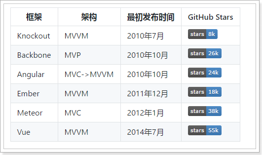
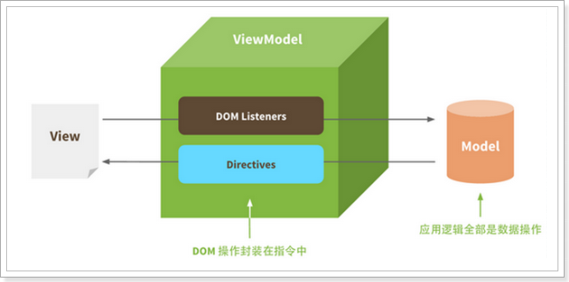
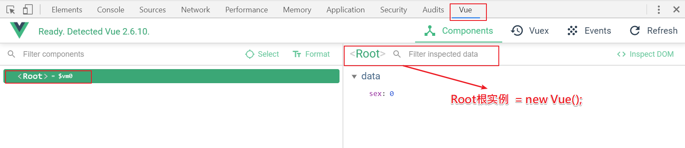
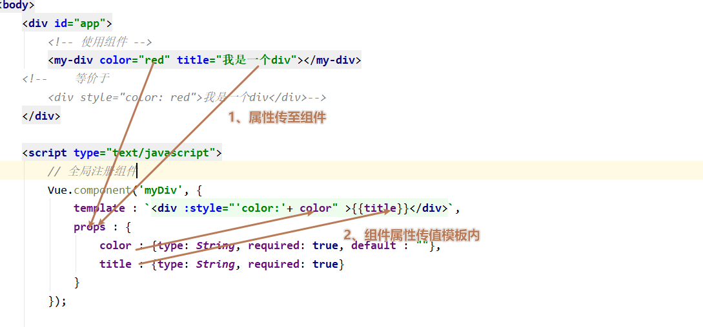
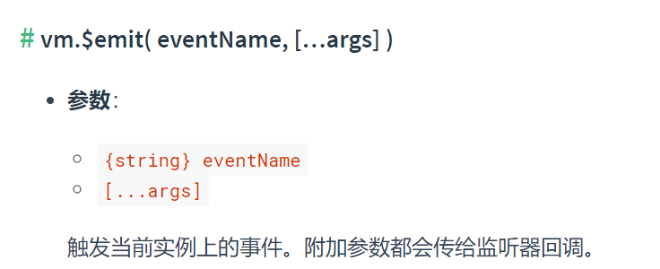

课程目标
目标1: 了解VUEJS作用及MVVM架构
目标2: 掌握VUEJS中常用指令
目标3: 了解VUEJS的生命周期
目标4: 掌握VUEJS中通过AXIOS完成异步请求
01、前端开发模式发展
静态页面(html)
- 最初的网页以HTML为主，是纯静态的网页。网页是只读的，信息流只能从服务的到客户端单向流通。开发人员也只关心页面的样式和内容即可。
异步刷新(Ajax)
1995年，网景工程师Brendan Eich花了10天时间设计了JavaScript语言.
随着JavaScript的诞生，我们可以操作页面的DOM元素及样式，页面有了一些动态的效果，但是依然是以静态为主。
Ajax盛行：2005年开始，ajax逐渐被前端开发人员所重视，因为不用刷新页面就可以更新页面的数据和渲染效果。此时的开发人员不仅仅要编写HTML样式，还要懂ajax与后端交互，然后通过JS操作Dom元素来实现页面动态效果。比较流行的框架如jQuery就是典型代表。
MVVM(模型和视图)
2008年，google的Chrome发布，随后就以极快的速度占领市场，超过IE成为浏览器市场的主导者。
2009年，Ryan Dahl在谷歌的Chrome V8引擎基础上，打造了基于事件循环的异步IO框架：Node.js。
- 基于时间循环的异步IO
- 单线程运行，避免多线程的变量同步问题
- JS可以编写后台diamante，前后台统一编程语言
node.js的伟大之处不在于让JS迈向了后端开发，而是构建了一个庞大的生态系统。
2010年，NPM作为node.js的包管理系统首次发布，开发人员可以遵循Common.js规范来编写Node.js模块，然后发布到NPM上供其他开发人员使用。目前已经是世界最大的包模块管理系统。
随后，在node的基础上，涌现出了一大批的前端框架:

何为MVVM模式？
- M: 即Model，模型，包括数据和一些基本操作
- V: 即View，视图，页面渲染结果
- VM: 即View-Model，模型与视图间的双向操作（无需开发人员干涉）
在MVVM之前，开发人员通过ajax从后端获取需要的数据模型，然后要通过DOM操作Model渲染到View中。而后来用户操作视图，我们还需要通过DOM获取View中的数据，然后同步到Model中。而MVVM中的VM要做的事情就是把DOM操作完全封装起来，开发人员不用再关心Model和View之间是如何互相影响的:
<!--视图:V-->
<input id="test" onchange="change()" type="text"/>
<script>
// 渲染数据到视图
var msg = "XXXX"; // 实际项目ajax获取后端数据得到msg，相当于model:M
document.getElementById("test").value = msg;
// 文本框修改事件触发调用函数
function change(){
// 事件触发，拿到视图数据
msg = document.getElementById("test").value;
}
</script>- 只要Model发生了改变，View上自然就会表现出来。
- 当用户修改了View，Model中的数据也会跟着改变。
把开发人员从繁琐的DOM操作中解放出来，把关注点放在如何操作Model上。

而今天要学习的，就是一款MVVM模式的框架: Vue
小结
MVVM特点：
- 只要Model发生了改变，View上自然就会表现出来。
- 当用户修改了View，Model中的数据也会跟着改变。
- MVVM设计的理念：视图和数据完全分离，渲染由框架自动完成。
02、Vue：概述与安装
目标: 什么是Vue? 如何安装?
2.1 概述
Vue (读音 /vjuː/，类似于 view) 是一套用于构建用户界面的渐进式框架。与其它大型框架不同的是，Vue 被设计为可以自底向上逐层应用。Vue 的核心库只关注视图层，不仅易于上手，还便于与第三方库整合。另一方面，Vue 也完全能够为复杂的单页应用提供驱动。
- 渐进式: 可以有选择性的使用该框架的一个或多个组件，并不需要将框架的全部组件都用在应用中；当应用业务需要用到更高级的，我们后面可以再加入高级组件。
官网链接: https://cn.vuejs.org
开发指南: https://cn.vuejs.org/v2/guide

Github地址：https://github.com/vuejs
2.2 安装
方式一: 直接下载，并用
<script>标签引入。- 下载地址: https://github.com/vuejs/vue (版本2.6.10)
- 解压后，在
dist目录下，可得到vue.js文件
方式二: CDN(Content Delivery Network 内容分发网络)
方式三: NPM
03、Vue：创建测试工程
创建一个新的工程, 选择静态web类型工程:
初始化项目: npm init
这是对项目的基本描述信息。例如名称、版本等，有点类似java中的pom.xml文件。
此时，会在项目目录下出现一个package.json文件。
安装Vue，输入命令：
npm install vue如果执行的时候出现类似如下错误；那么使用管理员身份进入到项目路径下执行上述命令:
安装vue之后，项目工程会出现node_modules文件夹，并且在下面有一个vue文件夹。
说明: node_modules是通过npm安装的所有模块的默认位置。
- 安装vue插件，在资料-插件有离线安装包，拖至idea即可：
04、Vue：快速入门
目标: 掌握Vue的入门示例
操作步骤
第一步: 从
资料\html目录下,拷贝所有html页面
第二步: Vue入门代码
demo_01.html:
<!DOCTYPE html> <html> <head> <meta charset="UTF-8"> <title>Vuejs测试</title> <!-- 引入Vue --> <script src="node_modules/vue/dist/vue.js"></script> </head> <body> <!-- View 视图 --> <div id="app"> {{message}} </div> <!-- Vuejs代码 --> <script type="text/javascript"> // 创建Vue实例 var vue = new Vue({ el : '#app', // 指定Vue渲染的html元素 element data : { // 数据对象 Model message : 'Vuejs入门到精通...' } }); </script> </body> </html>- 创建Vue实例: new Vue()来创建Vue实例
- 构造函数接收一个json对象，json对象中有一些属性:
- el: 是element的缩写，通过id选中要渲染的页面元素，本例中是一个div
- data: 数据对象，里面可以自定义很多属性，都可以渲染到视图中
- 页面中的 div 元素中，通过的方式，来渲染刚刚定义的message属性。
第三步：访问html:
小结
引入vue.js
定义渲染的html元素(一般为div元素)
创建Vue实例: 指定el data
05、Vue：插值表达式
目标: 掌握插值表达式的使用
- 语法:
{{数据对象中的属性|运算表达式}}
demo_01.html:
<!DOCTYPE html>
<html>
<head>
<meta charset="UTF-8">
<title>Vuejs测试</title>
<!-- 引入Vue -->
<script src="node_modules/vue/dist/vue.js"></script>
</head>
<body>
<!-- View 视图 -->
<div id="app">
{{message}}
<br/>
<!-- 插值表达式: 算术运算符 -->
{{x + 200}}
<br/>
<!-- 插值表达式: 三目运算符 -->
{{x > 50 ? '大于50' : '小于50'}}
</div>
<!-- Vuejs代码 -->
<script type="text/javascript">
// 创建Vue实例
var vue = new Vue({
el : '#app', // 指定Vue渲染的html元素 element
data : { // 数据对象 Model
message : 'Vuejs入门到精通...',
x : 100
}
});
</script>
</body>
</html>06、Vue：数据绑定指令
目标: 掌握v-model指令的使用
作用:【双向绑定】
v-model绑定html元素的value值到data对象的属性，data对象中的属性又可以绑定到html元素的value。
语法: v-model=”数据对象中的属性名” 或 v-model=”数据对象中的属性名.变量名”
- 核心代码：
demo_02.html:
<!DOCTYPE html>
<html lang="en">
<head>
<meta charset="UTF-8">
<title>Vuejs数据绑定</title>
<script src="node_modules/vue/dist/vue.js"></script>
</head>
<body>
<div id="app">
姓名：<input type="text" v-model="name"/><br/>
年龄：<input type="text" v-model="user.age"/><br/>
性别：<input type="text" v-model="user.sex"/><br/>
<hr/>
姓名：{{name}} 年龄：{{user.age}} 性别：{{user.sex}}
</div>
<script type="text/javascript">
var vue = new Vue({
el : '#app', // 渲染的html元素
data : { // 数据对象(必须先初始化)
name : '周星星',
user : {
age : '18',
sex : '男'
}
}
});
</script>
</body>
</html>注意：数据对象中的属性必须先定义，才能使用！
07、Vue：属性绑定指令
目标: 掌握v-bind指令的使用
作用:【单向绑定】
v-bind绑定html元素的属性值，只能从data对象中取属性绑定到html元素的属性值。
语法: v-bind:html元素的属性值=”数据对象中的属性名”
简写: :html元素的属性值=”数据对象中的属性名”
demo_03.html:
<!DOCTYPE html>
<html lang="en">
<head>
<meta charset="UTF-8">
<title>Vuejs属性绑定</title>
<script src="node_modules/vue/dist/vue.js"></script>
</head>
<body>
<div id="app">
<!-- v-bind: 绑定html元素的属性值 -->
<font v-bind:color="color" v-bind:size="size">周星星</font>
<hr/>
<!-- 简写: html元素的属性值 -->
<font :color="color" :size="size">周小星</font>
<hr/>
<!-- 拼接多个颜色值 -->
<font :color="color1 + color2" :size="size">周大星</font>
<!-- url带参数值 -->
<a :href="'http://www.baidu.com?id='+ id">百度</a>
</div>
<script type="text/javascript">
var vue = new Vue({
el : '#app', // 渲染的html元素
data : { // 数据对象(必须先初始化)
color : 'red',
color1 : 'yellow',
color2 : 'green',
size: 10,
id : 100
}
});
</script>
</body>
</html>点击上图百度超链接：
08、Vue：事件处理之事件指令
目标: 掌握vuejs的事件指令使用
- 作用: 为html元素绑定事件
- 语法: @click=”函数名()” @html元素的事件名把前面的on去掉
- 说明: 过时写法：v-on:click=”函数名()”， 此写法在Vue.js 1.x版本中使用，2.x版本中推荐使用@click
常用事件指令:
- @click：单击事件
- @blur：失去焦点事件
- @keyup：键盘按键按下并松开事件
- @focus：获取焦点事件
- @change：对应onchange改变事件
- @keydown：键盘按键按下事件
- @keypress：同上
- @mousedown：鼠标按下事件
- @mouseup：鼠标按下弹起事件
- @mouseenter：鼠标进入事件
- @mouseleave：鼠标离开事件
- @mouseover：鼠标进入事件
demo_04.html:
<!DOCTYPE html>
<html lang="en">
<head>
<meta charset="UTF-8">
<title>Vuejs事件绑定</title>
<script src="node_modules/vue/dist/vue.js"></script>
</head>
<body>
<div id="app">
<!-- v-model.number : 指定x变量的数据类型 -->
x值：<input type="text" v-model.number="x" @keyup="keyup()"/><br/>
y值：<input type="text" v-model.number="y" @blur="blur()"/><br/>
<input type="button" @click="calc()" value="计算一"/>
<!--
@事件名 这种方式绑定事件在Vue2.0推荐使用
过时的事件绑定(了解 1.x版本)
v-on:事件名 已放弃
-->
<input type="button" v-on:click="calc()" value="计算二"/>
<hr/>
{{count}}
</div>
<script type="text/javascript">
var vue = new Vue({
el : '#app', // 渲染的html元素
data : { // 数据对象(必须先定义，才能使用)
x : '',
y : '',
count : ''
},
methods : { // 事件方法
calc() {
this.count = this.x + this.y;
},
keyup() {
alert(this.x);
},
blur() {
alert(this.y);
}
}
});
</script>
</body>
</html>注意：
1、v-model.number=”x”绑定数据时指定x变量的数据类型。(默认都是字符串类型)
2、触发事件调用的方法，必须在vue实例中的methods里定义
09、Vue：事件处理之事件修饰符（了解）
目标: 掌握事件修饰符的使用
- 语法: 事件指令.事件修饰符。
- 例如: @submit.prevent 或 @click.stop
事件修饰符概述
- Vue.js为绑定事件提供了事件修饰符来处理 DOM 事件细节，如：event.preventDefault() 或event.stopPropagation()。
- Vue.js通过由点(.)表示的指令后缀来调用修饰符。
- .stop 阻止事件传播(冒泡)
- .prevent 取消事件默认行为
demo_05.html
<!DOCTYPE html>
<html lang="en">
<head>
<meta charset="UTF-8">
<title>Vuejs事件修饰符</title>
<script src="node_modules/vue/dist/vue.js"></script>
</head>
<body>
<div id="app">
<!-- @submit.prevent: 取消事件默认行为 -->
<!-- onsumbit事件的默认行为就是跳转到京东-->
<form @submit.prevent action="http://www.jd.com" method="get">
<input type="submit" value="请求京东"/>
</form>
<div @click="fun1()">
<!-- @click.stop: 阻止事件传播(冒泡) -->
<a @click.stop href="http://www.itcast.cn">itcast</a>
</div>
</div>
<script type="text/javascript">
var vue = new Vue({
el : '#app',
methods : { // 方法
fun1 () {
alert('22');
}
}
});
</script>
</body>
</html>10、Vue：事件处理之按键修饰符
目标: 掌握按键修饰符的使用
- 语法: 事件指令.按键修饰符=”函数名()” 【只针对按键相关事件有效】
- 例如: @keydown.enter=”fun1()” 或 @keyup.enter=”fun1()”
- 典型应用场景：按回车（即enter键）进行表单提交
Vue.js允许在绑定事件时可以指定具体的按键事件，按键别名:
- .enter (回车键)
- .tab (Tab键)
- .delete (捕获 “删除” 和 “退格” 键)
- .esc (Esc键)
- .space (Space键)
- .up (向上键)
- .down (向下键)
- .left (向左键)
- .right (向右键)
- .ctrl (Ctrl键)
- .alt (Alt键)
- .shift (Shift键)
demo_06.html:
<!DOCTYPE html>
<html lang="en">
<head>
<meta charset="UTF-8">
<title>Vuejs按键修饰符</title>
<script src="node_modules/vue/dist/vue.js"></script>
</head>
<body>
<div id="app">
<!-- 判断按下了什么键才触发事件：
@keydown.enter: 按下了回车键
$event: Vue事件对象
-->
姓名：<input type="text" @keydown.enter="fun1($event)"/>
</div>
<script type="text/javascript">
var vue = new Vue({
el : '#app',
methods : {
fun1 (e) {
alert('按下了回车键！' + e.keyCode);
}
}
});
</script>
</body>
</html>说明：$event为Vue.js的事件对象它封装了(dom的event对象)。
$event.keyCode: 获取按键代号。
11、Vue：数据迭代指令
目标: 掌握v-for迭代指令的使用
- 作用: v-for 迭代数组 或 json对象
11.1 迭代数组
语法: v-for="item in 数组" 或 v-for="(item,index) in 数组"demo_07.html:
<!DOCTYPE html>
<html lang="en">
<head>
<meta charset="UTF-8">
<title>Vuejs迭代指令</title>
<script src="node_modules/vue/dist/vue.js"></script>
</head>
<body>
<div id="app">
<ul>
<!-- 迭代数组 -->
<li v-for="(item,index) in dataList">
索引号：{{index}} === 数组元素：{{item}}
</li>
</ul>
</div>
<script type="text/javascript">
var vue = new Vue({
el : '#app',
data : {
dataList : [100,200,300,400,500]
}
});
</script>
</body>
</html>11.2 迭代对象
语法：v-for="(value,key) in 对象"demo_08.html:
<!DOCTYPE html>
<html lang="en">
<head>
<meta charset="UTF-8">
<title>Vuejs迭代指令</title>
<script src="node_modules/vue/dist/vue.js"></script>
</head>
<body>
<div id="app">
<ul>
<!-- 迭代对象 -->
<li v-for="(value,key) in user">
{{key}} = {{value}}
</li>
</ul>
</div>
<script type="text/javascript">
// 创建Vue实例
var vue = new Vue({
el : '#app', // 渲染的html元素
data : { // 数据对象
user: {
name : "张三",
age : 18,
sex : "男"
}
}
});
</script>
</body>
</html>11.3 迭代对象数组
语法：v-for="item in 对象数组” 或 v-for=”(item,index) in 对象数组"demo_09.html:
<!DOCTYPE html>
<html lang="en">
<head>
<meta charset="UTF-8">
<title>Vuejs迭代指令</title>
<script src="node_modules/vue/dist/vue.js"></script>
</head>
<body>
<div id="app">
<table border="1">
<tr>
<th>编号</th>
<th>姓名</th>
<th>性别</th>
<th>年龄</th>
</tr>
<!-- 迭代对象数组 -->
<tr v-for="(u, index) in users">
<td>{{index + 1}}</td>
<td>{{u.name}}</td>
<td>{{u.sex}}</td>
<td>{{u.age}}</td>
</tr>
</table>
</div>
<script type="text/javascript">
// 创建Vue实例
var vue = new Vue({
el : '#app', // 渲染的html元素
data: { // 数据对象
// 定义数组对象
users: [
{
name: "张学友",
age: 58,
sex: "男"
},
{
name: "刘德华",
age: 60,
sex: "男"
},
{
name: "郭富城",
age: 59,
sex: "男"
}
]
}
});
</script>
</body>
</html>12、Vue：v-text&v-html指令
目标: 掌握v-text|v-html指令的使用
v-text: 为html元素添加text相当于innerText (原样输出)
语法: <html标签名 v-text=”数据对象中的属性名”></html标签名>
v-html: 为html元素添加html相当于innerHTML (格式化输出)
语法: <html标签名 v-html=”数据对象中的属性名”></html标签名>
demo_10.html:
<!DOCTYPE html>
<html lang="en">
<head>
<meta charset="UTF-8">
<title>Vuejs文本指令</title>
<script src="node_modules/vue/dist/vue.js"></script>
</head>
<body>
<div id="app">
<div v-text="message"></div>
<div v-html="message"></div>
</div>
<script type="text/javascript">
// 创建Vue实例
var vue = new Vue({
el : '#app', // 渲染的html元素
data : { // 数据对象
message : "<h1>html标签</h1>"
}
});
</script>
</body>
</html>13、Vue：v-if&v-show指令
目标: 掌握如何控制html元素显示或隐藏
v-if: 控制html元素是显示还是隐藏(true:显示、false:隐藏)
语法：<html标签名 v-if=”true|false”></html标签名>
v-show: 控制html元素是显示还是隐藏(true:显示、false:隐藏)
语法：<html标签名 v-show=”true|false”></html标签名>
不同之处:
v-if: 显示(插入该html元素)、隐藏(删除该html元素)
v-show: 显示(删除style的display)、隐藏(设置style=”display:none”)
demo_11.html:
<!DOCTYPE html>
<html lang="en">
<head>
<meta charset="UTF-8">
<title>Vuejs显示与隐藏</title>
<script src="node_modules/vue/dist/vue.js"></script>
</head>
<body>
<div id="app">
<div v-if="flag">我可是最牛div层一</div>
<div v-show="flag">我可是最牛div层二</div>
<input type="button" @click="toggle()" value="开关"/>
</div>
<script type="text/javascript">
var vue = new Vue({
el : '#app',
data : {
flag : true
},
methods : {
toggle : function () {
this.flag = !this.flag;
}
}
});
</script>
</body>
</html>14、Vue：条件指令
目标: 掌握条件指令的使用
v-if: 条件成立输出该html标签中的内容。
v-else-if: 如果v-if条件不成立，才会判断该条件，如果条件成立输出该html标签中的内容。
v-else: 如果v-if或v-else-if条件不成立，输出该html标签中的内容。
demo_12.html:
<!DOCTYPE html>
<html lang="en">
<head>
<meta charset="UTF-8">
<title>Vuejs条件指令</title>
<script src="node_modules/vue/dist/vue.js"></script>
</head>
<body>
<div id="app">
<!-- v-if / v-else-if / v-else -->
<div>
<span v-if="sex == 1">男</span>
<span v-else-if="sex == 2">女</span>
<span v-else>保密</span>
</div>
<!-- v-if / v-else-if -->
<div>
<span v-if="sex == 1">男</span>
<span v-else-if="sex == 2">女</span>
</div>
<!-- v-if / v-else -->
<div>
<span v-if="sex == 1">男</span>
<span v-else>保密</span>
</div>
</div>
<script type="text/javascript">
// 创建Vue实例
var vue = new Vue({
el : '#app', // 渲染的html元素
data : { // 数据对象
sex: "1"
}
});
</script>
</body>
</html>15、Vue：vue实例详解
a. 每个 Vue 应用都是通过用 Vue 函数创建一个新的 Vue 根Root实例 开始的:
// 创建Vue实例
var vue = new Vue({
// 选项对象
});
b. 当创建一个 Vue 实例时，你可以传入一个选项对象, 选项对象包括(例举):
- DOM (视图):
- el: 渲染的html元素
- template: 渲染的模板(组件开发时用)
- render: 渲染函数(组件开发时用)
- 数据/方法
- data: 数据
- props: 组件属性((组件开发时用))
- methods: 方法
- computed: 计算属性
- watch: 监控属性
- 生命周期钩子(不同阶段自动回调的函数)
- beforeCreate
- created
- beforeMount
- mounted
- beforeUpdate
- updated
- beforeDestory
- destoryed
c. Vue实例常用的方法:
vm.$mount() 挂载方法 (常用于组件开发)
如果 Vue 实例在实例化时没有指定 el 选项，则它处于“未挂载”状态，没有关联的 DOM 元素。
可以使用
vm.$mount()手动地挂载一个未挂载的实例。vm.$emit() 定义触发当前实例上的事件 (常用于组件开发)
触发当前实例上的事件。附加参数都会传给监听器回调。
参考官方api: https://cn.vuejs.org/v2/api/
16、Vue：生命周期【了解】
目标: 了解vuejs的生命周期
每个 Vue 实例在被创建时都要经过一系列的初始化过程: 创建实例，装载模板，渲染模板等。Vue为生命周期中的每个状态都设置了钩子函数（监听函数）。每当Vue实例处于不同的生命周期时，对应的函数就会被触发调用。
生命周期钩子函数:
beforeCreate：实例初始化之后调用（要啥啥没有，data和methods都拿不到）
created：实例创建完成后调用（data和methods都拿到了）
beforeMount：挂载开始之前调用（拿到了html元素作为模板，但是还没有做数据挂载）
mounted：挂载完毕之后调用
beforeUpdate：数据更新之前调用
updated：数据更新之后调用
beforeDestory：实例销毁之前调用。在这一步，实例仍然完全可用。
destoryed：实例销毁之后调用。调用后，Vue 实例指示的所有东西都会解绑定，所有的事件监听器会被移除，所有的子实例也会被销毁。
生命周期图示:

vm.$el: Vue 实例使用的根 DOM 元素。
Vue在实例化的过程中，会调用这些生命周期的方法，给我们提供了执行自定义逻辑的机会。那么，在这些vue钩子中，vue实例到底执行了那些操作，我们先看下面执行的例子:
demo_13.html:
<!DOCTYPE html>
<html lang="en">
<head>
<meta charset="UTF-8">
<title>Vuejs生命周期钩子</title>
<script src="node_modules/vue/dist/vue.js"></script>
</head>
<body>
<div id="app">
{{message}}
</div>
<script type="text/javascript">
var vm = new Vue({
el : '#app',
data : {
message : 'VueJS 您好!'
},
beforeCreate : function() {
showData('1.实例初始化之后', this);
},
created : function() { // 比较重要(发异步请求加载初始化数据)
showData('2.实例创建完成后', this);
},
beforeMount : function() {
showData('3.挂载到dom前', this);
},
mounted : function() {
showData('4.挂载到dom后', this);
},
beforeUpdate : function() {
showData('5.数据变化更新前', this);
},
updated : function() {
showData('6.数据变化更新后', this);
},
beforeDestroy : function() {
vm.test = "3333";
showData('7.vue实例销毁前', this);
},
destroyed : function() {
showData('8.vue实例销毁后', this);
}
});
function showData(process, obj) {
console.log(process);
console.log('data 数据：' + obj.message)
console.log('挂载的对象：')
console.log(obj.$el)
console.log('真实dom结构：' + document.getElementById('app').innerHTML);
console.log('-------------------------------')
}
vm.message = "good...";
vm.$destroy();
</script>
</body>
</html>小结
页面初始化数据，可以在哪些钩子函数中提前加载?
- created、beforeMount、mounted 三个钩子函数(页面初始化，发送异步请求，获取后台数据)
17、Vue：computed计算属性
目标: 掌握compued计算属性的使用
在插值表达式中使用js做运算非常方便。但是如果表达式的内容很长，就会显得不够优雅，而且后期维护起来也不方便，这个时候就可以用计算属性。
使用语法:
computed: {
key1: function(){
return "计算后的数据";
},
key2: function(){
return "计算后的数据";
}
}demo_14.html:
<!DOCTYPE html>
<html lang="en">
<head>
<meta charset="UTF-8">
<title>Vuejs计算属性</title>
<script src="node_modules/vue/dist/vue.js"></script>
</head>
<body>
<div id="app">
<!-- 插值表达式 -->
<h2>{{new Date(milliseconds).getFullYear() + "年"
+ new Date(milliseconds).getMonth()
+ "月" + new Date(milliseconds).getDate()}}</h2>
<!-- 计算属性 (注意：它不是一个函数) -->
<h2>{{time}}</h2>
</div>
<script type="text/javascript">
var vue = new Vue({
el : '#app', // 渲染的html元素
data : { // 数据对象
milliseconds : 1573878276849,
},
computed : { // 计算属性
time (){ // time属性
const date = new Date(this.milliseconds);
return date.getFullYear() + "年" + date.getMonth() + "月" + date.getDate();
}
}
});
</script>
</body>
</html>注意:
- 计算属性本质是函数，但是一定要返回数据。页面渲染时，只能把这个函数当成一个属性来使用。
- 计算属性需要我们自己主动调用，生命周期钩子函数不会主动调用计算属性。
18、Vue：watch监控属性
目标: 掌握watch监控属性的使用
watch可以帮我们监控数据对象中的属性值发生改变。
使有语法:
watch : {
key1 : function(newVal, oldVal){
},
"obj.key1" : function(newVal, oldVal){
},
obj : {
// 开启深度监控(对象)
deep : true,
// 监控函数，必须用这个函数名
handler : function(obj){
}
}
}demo_15.html:
<!DOCTYPE html>
<html lang="en">
<head>
<meta charset="UTF-8">
<title>Vuejs监控属性</title>
<script src="node_modules/vue/dist/vue.js"></script>
</head>
<body>
<div id="app">
<input type="text" v-model="message"/><br/>
<h2>{{message}}</h2>
<input type="text" v-model="user.name"/><br/>
<input type="text" v-model="user.age"/><br/>
<h2>
姓名: {{user.name}} ==> 年龄: {{user.age}}
</h2>
</div>
<script type="text/javascript">
var vue = new Vue({
el : '#app', // 渲染的html元素
data : { // 数据对象
message : '',
user : {name : '', age : ''}
},
watch : { // 监控属性
message : function(newVal, oldVal){
console.log("新值:" + newVal + ",旧值:" + oldVal);
},
"user.name" : function(newVal, oldVal){
console.log("user.name:" + newVal + ",user.name:" + oldVal);
},
user : {
// 开启深度监控，可以监控到对象属性值的变化
deep : true,
// 监控处理函数
handler : function (obj) {
console.log("name:" + obj.name + ",age:" + obj.age);
}
}
}
});
</script>
</body>
</html>- 监控message变化：
- 监控user对象变化：
19、Vue高级编程：定义组件
19.1 组件介绍
在大型应用开发的时候，页面可以划分成很多部分。往往不同的页面，也会有相同的部分。例如可能会有相同的头部导航。但是如果每个页面都独自开发，这无疑增加了开发的成本。所以会把页面的不同部分拆分成独立的组件，然后在不同页面就可以共享这些组件，避免重复开发。
Vue组件的作用: 代码复用
通常一个应用会以一棵嵌套的组件树的形式来组织:

- 例如，你可能会有页头、侧边栏、内容区等组件，每个组件又包含了其它的像导航链接、博文之类的组件。
- 为了能在模板中使用，这些组件必须先注册以便 Vue 能够识别。这里有两种组件的注册类型：全局注册和局部注册。
19.2 定义组件
定义组件语法:
// 定义组件
const 组件对象 = {
// 渲染模板
template : ``,
// 组件数据 (必须是一个函数)
data : function () {
return {
}
},
// 组件属性
props : {
},
// 计算属性
computed : {
},
// 方法
methods : {
},
// 监控属性
watch : {
},
// 生命周期钩子
created (){
}
};demo_16.html:
<!DOCTYPE html>
<html lang="en">
<head>
<meta charset="UTF-8">
<title>Vuejs定义组件</title>
<script src="node_modules/vue/dist/vue.js"></script>
</head>
<body>
<div id="app">
</div>
<script type="text/javascript">
// 定义组件
const MyButton = {
// 渲染模板
template : `<button @click="calc()">你点击了: {{num}}次！</button>`,
// 组件数据 (必须是一个函数)
data : function () {
return {
num: 1
}
},
// 组件属性
props : {
},
// 计算属性
computed : {
},
// 方法
methods : {
calc : function () {
this.num++;
}
},
// 监控属性
watch : {
},
// 生命周期钩子
created (){
}
};
// 创建Vue实例
var vue = new Vue({
el : '#app', // 渲染的html元素
data : { // 数据对象
}
});
</script>
</body>
</html>20、Vue高级编程：注册组件
20.1 全局注册
全局注册的组件，可以用在所有的 Vue 实例 (
new Vue) 中。语法:
# 第一种方式 Vue.component('组件名称', { /* ... */ }) # 第二种方式 Vue.component('组件名称', 组件对象);定义组件名:
使用 kebab-case
Vue.component('my-component-name', { /* ... */ })当使用 kebab-case (短横线分隔命名) 定义一个组件时，你也必须在引用这个自定义元素时使用 kebab-case，例如
<my-component-name>。
使用 PascalCase
Vue.component('MyComponentName', { /* ... */ })当使用 PascalCase (首字母大写命名) 定义一个组件时，你在引用这个自定义元素时两种命名法都可以使用。也就是说
<my-component-name>和<MyComponentName>都是可接受的。注意，尽管如此，直接在 DOM (即非字符串的模板) 中使用时只有 kebab-case 是有效的。
使用自定义的组件(demo_16.html):
访问HTML效果:
20.2 局部注册
局部注册的组件，只能在当前的Vue实例中可以使用。
语法:
// 局部注册组件(只有当前vue实例可以用) components : { "my-button" : MyButton }使用自定义组件:
demo_17.html:
<!DOCTYPE html> <html lang="en"> <head> <meta charset="UTF-8"> <title>Vuejs定义组件</title> <script src="node_modules/vue/dist/vue.js"></script> </head> <body> <div id="app"> <!-- 使用组件 --> <my-button></my-button> <my-button></my-button> <my-button></my-button> </div> <script type="text/javascript"> // 定义组件 const MyButton = { // 渲染模板 template : `<button @click="calc()">你点击了: {{num}}次！</button>`, // 组件数据 (必须是一个函数) data : function () { return { num: 1 } }, // 组件属性 props : { }, // 计算属性 computed : { }, // 方法 methods : { calc : function () { this.num++; } }, // 监控属性 watch : { }, // 生命周期钩子 created (){ } }; // 创建Vue实例 var vue = new Vue({ el : '#app', // 渲染的html元素 data : { // 数据对象 }, // 局部注册组件(只有当前vue实例可以用) components : { "my-button" : MyButton } }); </script> </body> </html>
21、Vue高级编程：组件通信
21.1 父向子通信
通过 Prop 向子组件传递数据
语法:
// 定义组件: 组件属性(定义父组件需要传递过来的属性) props : { // Prop属性名 : {type : "数据类型", required : 是否必须} title : {type : String, required : true}, color : {type : String, required : false} } // 使用组件 <组件名称 title="" color=""></组件名称>
示例一
- 代码： (demo_18.html)
<!DOCTYPE html> <html lang="en"> <head> <meta charset="UTF-8"> <title>Vuejs父子通信</title> <script src="node_modules/vue/dist/vue.js"></script> </head> <body> <div id="app"> <!-- 使用组件 --> <my-div color="red" title="我是一个div"></my-div> <!-- 等价于 <div style="color: red">我是一个div</div> --> </div> <script type="text/javascript"> // 全局注册组件 Vue.component('myDiv', { template : `<div :style="'color:'+ color" >{{title}}</div>`, props : { color : {type: String, required: true, default : ""}, title : {type: String, required: true} } }); // 创建Vue实例 var vue = new Vue({ el : '#app', // 渲染的html元素 data : { // 数据对象 } }); </script> </body> </html>- 数据流转流程：

html展示效果
示例二
- 代码： (demo_19.html)
<!DOCTYPE html> <html lang="en"> <head> <meta charset="UTF-8"> <title>Vuejs父子通信</title> <script src="node_modules/vue/dist/vue.js"></script> </head> <body> <div id="app"> <!-- 使用组件 --> <my-ul :cities="dataList"></my-ul> </div> <script type="text/javascript"> // 全局注册组件 Vue.component("MyUl", { // 渲染模板 template : ` <ul> <li v-for="c in cities">{{c.name}}</li> </ul> `, // 组件数据 (必须是一个函数) data : function () { return { } }, // 组件属性(定义父组件需要传递过来的属性) props : { cities : {type : Array, required : true, default : []} } }); // 创建Vue实例 var vue = new Vue({ el : '#app', // 渲染的html元素 data : { // 数据对象 dataList : [{id : 1, name : '广州市'}, {id : 2, name : '深圳市'}, {id : 3, name : '珠海市'}, {id : 4, name : '东莞市'}] } }); </script> </body> </html>- html效果：
21.2 子向父通信
通过Vue实例$emit方法，触发当前实例上的事件方式向父组件传递数据
语法:

示例
- 代码： (demo_20.html)
<!DOCTYPE html> <html lang="en"> <head> <meta charset="UTF-8"> <title>Vuejs子父通信</title> <script src="node_modules/vue/dist/vue.js"></script> </head> <body> <div id="app"> <!-- 使用组件 --> <counter @xxx="calcNum"></counter> <h3>结果: {{num}}</h3> </div> <script type="text/javascript"> // 全局注册组件 Vue.component("counter", { // 渲染模板 template : ` <div> <button @click="calc(1)">+</button> <button @click="calc(2)">-</button> </div> `, // 方法 methods : { calc (flag){ // 定义触发的事件 // 参数1: 事件名称(字母需要小写) // 参数2: 参数 this.$emit("xxx", flag); } } }); // 创建Vue实例 var vue = new Vue({ el : '#app', // 渲染的html元素 data : { // 数据对象 num : 1 }, methods : { calcNum (flag){ flag == 1 ? this.num++ : this.num--; } } }); </script> </body> </html>- html效果：
22、Vue：Ajax介绍
目标: 了解Vue的异步请求
Vue并没有直接处理ajax的模块，但可以使用axios或vue-resource框架实现对异步请求的操作。
22.1 vue-resource
- vue-resource是Vue.js的插件，提供了使用XMLHttpRequest或JSONP进行Web请求和处理响应的服务。 当vue更新到2.0之后，作者就宣告不再对vue-resource更新，而是推荐的axios，在这里大家了解一下vue-resource就可以。
- vue-resource的github: https://github.com/pagekit/vue-resource
22.2 axios
Axios 是一个基于 promise 的 HTTP 库，可以用在浏览器和 node.js 中。
axios的github地址：https://github.com/axios/axios
安装axios
- 第一种方式：npm安装
# 使用npm安装 npm install axios- 第二种方式：直接使用公共的CDN（内容分发网络）服务引入js
<script src="https://unpkg.com/axios/dist/axios.min.js"></script>
23、axios：入门
目标: 掌握和学习异步处理组件axios。
23.1 请求方法介绍
- axios(config)
- axios.get(url, [config])
- axios.post(url, [data], [config])
- axios.delete(url, [config])
- axios.head(url, [config])
- axios.put(url, [data], [config])
- axios.patch(url, [data], [config])
23.2 config配置对象
这些是创建请求时可以用的配置选项。只有 url 是必需的。如果没有指定 method，请求将默认使用 get 方法。
{
// `url` 是用于请求的服务器 URL
url: '/user',
// `method` 是创建请求时使用的方法
method: 'get',
// 默认是 get
// `baseURL` 将自动加在 `url` 前面，除非 `url` 是一个绝对 URL。
// 它可以通过设置一个 `baseURL` 便于为 axios 实例的方法传递相对 URL
baseURL: 'https://some-domain.com/api/',
// `headers` 是即将被发送的自定义请求头
headers: {'X-Requested-With':'XMLHttpRequest', 'Content-Type': 'application/json'},
// `params` 是即将与请求一起发送的 URL 参数，一般用于GET请求
// 必须是一个无格式对象(plain object)或 URLSearchParams 对象
params: { id: 12345 },
// `data` 是作为请求主体被发送的数据
// 只适用于这些请求方法 'PUT', 'POST', 和 'PATCH'
data: { firstName: 'Fred'},
// `timeout` 指定请求超时的毫秒数(0 表示无超时时间)
// 如果请求话费了超过 `timeout` 的时间，请求将被中断
timeout: 1000,
// `withCredentials` 表示跨域请求时是否需要使用凭证
withCredentials: false, // 默认的
// 'responseType' 表示服务器响应的数据类型，可以是
// 'arraybuffer', 'blob', 'document', 'json', 'text', 'stream'
responseType: 'json', // 默认的
// 'responseEncoding' 响应的数据默认编码
responseEncoding: 'utf8' // default
}23.3 response响应对象
{
// `data` 由服务器提供的响应
data: {},
// `status` 来自服务器响应的 HTTP 状态码
status: 200,
// `statusText` 来自服务器响应的 HTTP 状态信息
statusText: 'OK',
// `headers` 服务器响应的头
headers: {},
// `config` 是为请求提供的配置信息
config: {}
}23.4 axios.get方法
// 第一种方式
axios.get('/user?id=12345')
.then(function (response) { // 请求成功
// handle success
console.log(response);
})
.catch(function (error) { // 请求出错
// handle error
console.log(error);
});
// 第二种方式
axios.get('/user',{params : {id : 12345}})
.then(function (response) { // 请求成功
// handle success
console.log(response);
})
.catch(function (error) { // 请求出错
// handle error
console.log(error);
});23.5 axios.post方法
axios.post('/user', {
id: 1,
name: '小华华'
})
.then(function (response) { // 请求成功
console.log(response);
})
.catch(function (error) { // 请求出错
console.log(error);
});23.6 axios方法
axios({
method: 'post',
url: '/user/12345',
data: {
id: 1,
name: '中华华'
}
})
.then(function (response) { // 请求成功
console.log(response);
})
.catch(function (error) { // 请求出错
console.log(error);
});24、axios-GET请求：查询全部用户
第一步: 在springboot-high工程中整合vue与axios,拷贝
资料中static文件夹。第二步: 创建Vue实例
第三步: 发送异步请求查询用户数据
第四步: v-for迭代数组，显示用户信息
第五步: 配置jackson格式化日期属性(JacksonProperties.java) application.yml
# 配置jackson spring: jackson: date-format: yyyy-MM-dd HH:mm:ss # 日期格式器 timeZone: GMT+8 # 时区(格林威冶标准时间 Greenwich Mean Time) + 8 东区北京时间
25、axios：发送post请求
操作步骤
第一步: 在addUser.html页面,引入js文件
<script src="js/vue.js"></script> <script src="js/axios.js"></script>第二步: 表单数据绑定
<div style="text-align: center"> <span>用户名: <input type="text" v-model="user.userName"/> </span><br/> <span>密码: <input type="password" v-model="user.password"/></span><br/> <span>姓名: <input type="text" v-model="user.name"/></span><br/> <span>年龄: <input type="text" v-model="user.age"/></span><br/> <span>性别: <input type="radio" value="1" v-model="user.sex" checked/>男 <input type="radio" value="2" v-model="user.sex">女</span><br/> <span>生日: <input type="text" v-model="user.birthday"/></span><br/> <span>备注: <input type="text" v-model="user.note"></span><br/> <input type="button" value="添加" @click="save()"/><br/> {{user}} </div>第三步: 定义异步请求方法
// 文档加载完 window.onload = function () { // 创建Vue实例 var vue = new Vue({ el : '#app', // 指定渲染的html元素 data : { // 数据对象 user : {sex : 1} }, methods : { // 操作方法 // 添加用户 save (){ // 发送异步请求 axios.post("/save", this.user).then((response) => { if (response.data){ alert("添加成功！"); }else { alert("添加失败！"); } }).catch((error) => { console.log(error) }); } } }); };第四步: 在UserController.java，新增保存用户方法
说明: 由于axios.post()方法，向后台发送的请求参数是json对象，后台必须用@RequestBody注解来接收，jackson会把json对象转化成User对象。
// 添加用户 @PostMapping("/save") public boolean save(@RequestBody User user){ try { userService.save(user); return true; }catch (Exception ex){ ex.printStackTrace(); } return false; }第五步: 在UserService.java，新增保存用户方法
// 添加用户 public void save(User user) { try{ user.setCreated(new Date()); user.setUpdated(user.getCreated()); userMapper.insert(user); }catch (Exception ex){ throw new RuntimeException(ex); } }后台报错的原因是因为 birthday生日字符串 解析成 Date日期对象 出错:
Resolved [org.springframework.http.converter.HttpMessageNotReadableException: JSON parse error: Cannot deserialize value of type `java.util.Date` from String "1999-01-01": not a valid representation (error: Failed to parse Date value '1999-01-01': Unparseable date: "1999-01-01"); nested exception is com.fasterxml.jackson.databind.exc.InvalidFormatException: Cannot deserialize value of type `java.util.Date` from String "1999-01-01": not a valid representation (error: Failed to parse Date value '1999-01-01': Unparseable date: "1999-01-01") at [Source: (PushbackInputStream); line: 1, column: 87] (through reference chain: cn.itcast.springboot.pojo.User["birthday"])]我们配置了全局的jackson日期格式器，但跟生日的日期格式器不对应:
第六步: 单独为生日指定日期格式器(User.java)
第七步: 测试
课程总结
- 了解MVVM架构
- Vue常用指令
- 了解Vue实例生命周期
- axios异步请求
- axios.get(url,[config]).then().catch();
- axios.post(url,[data], [config]).then().catch();